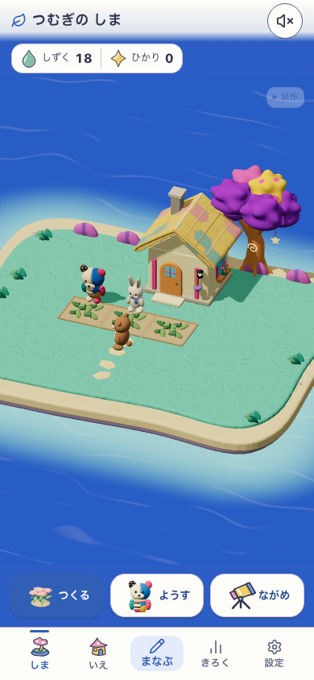
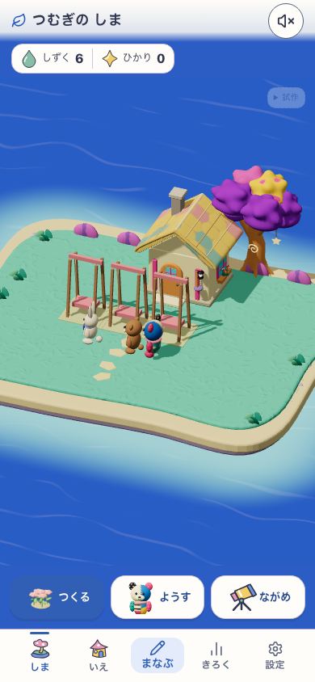
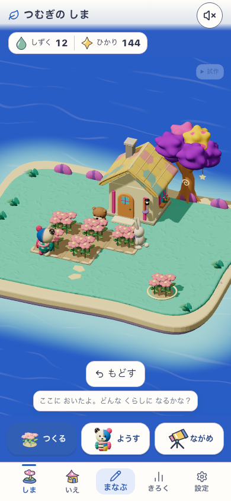
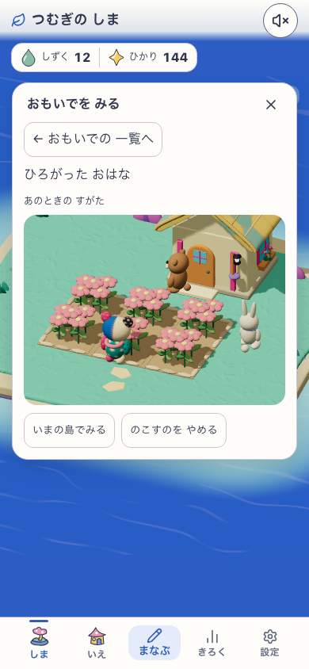
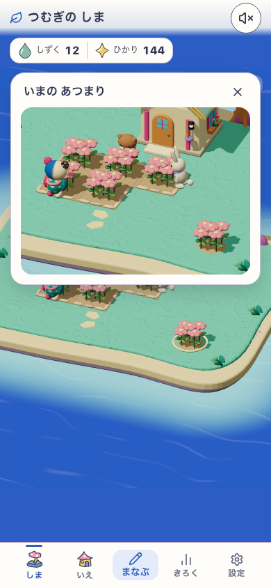
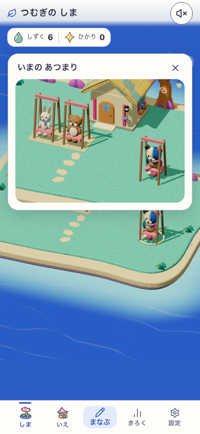
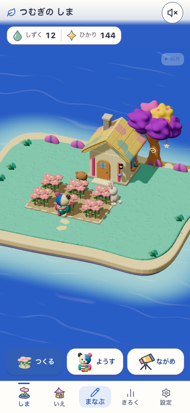
DEV 5223 / island-life-discovery-a-gatherings-v1 / HEAD 7a159d6 + working tree / source 029da236e685d6664f37a92815b088a8a87a98d405fff0908cba9f78761e8c3c。明示所有・成長fixture。Human N=0。release全体の証拠ではない。








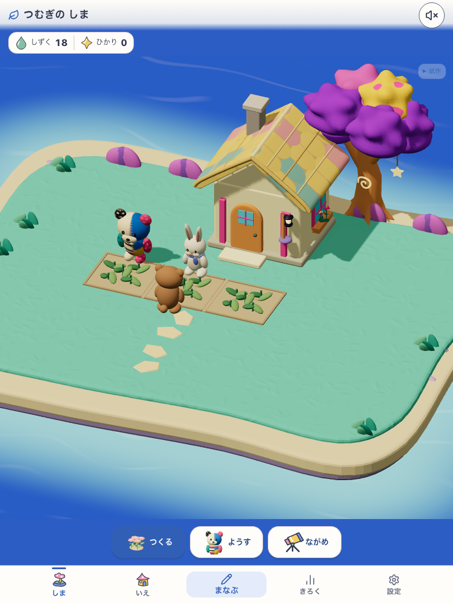
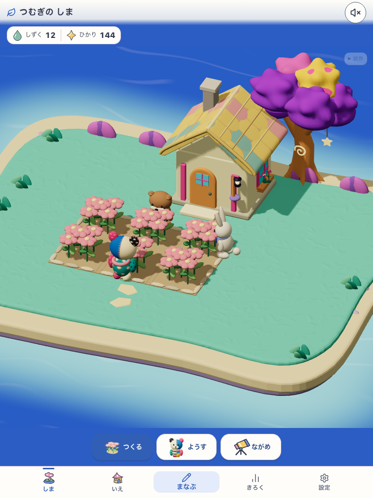
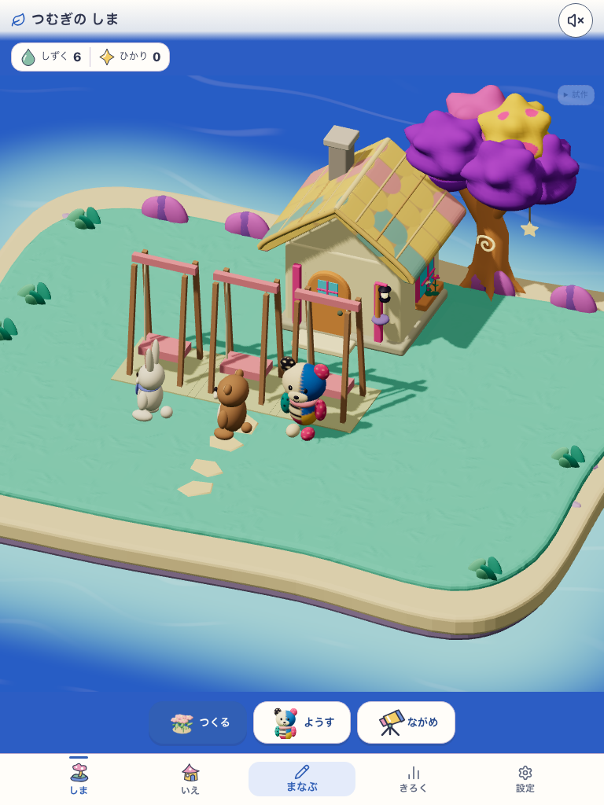
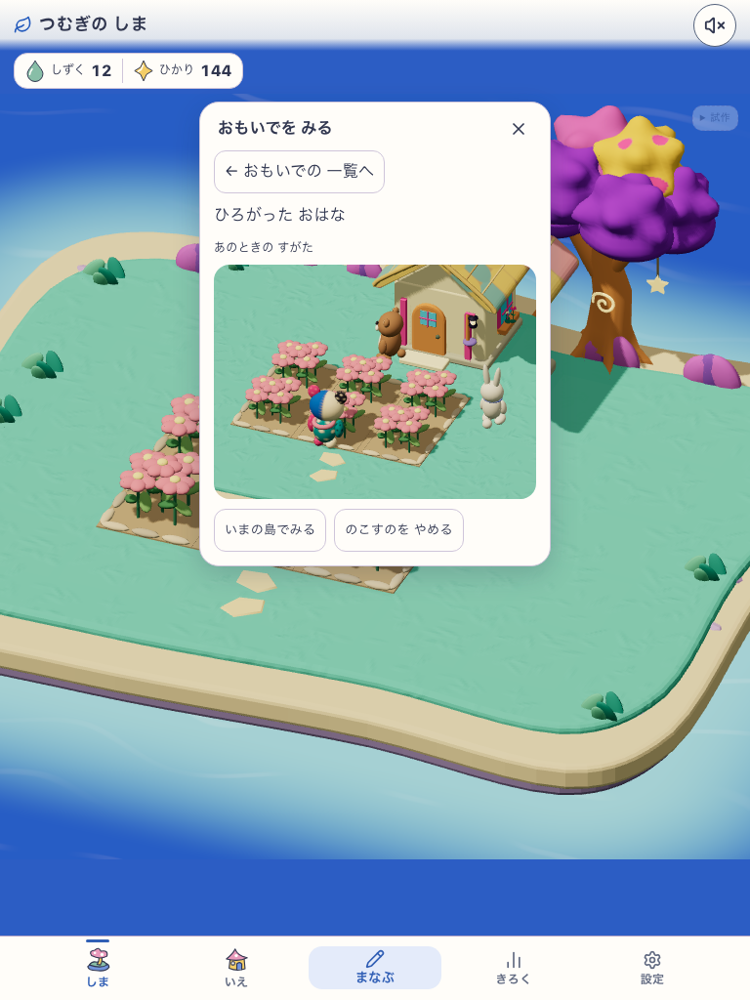
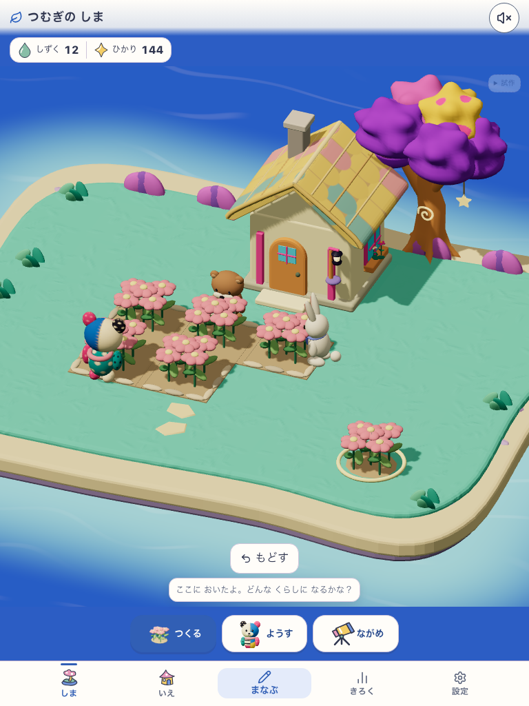
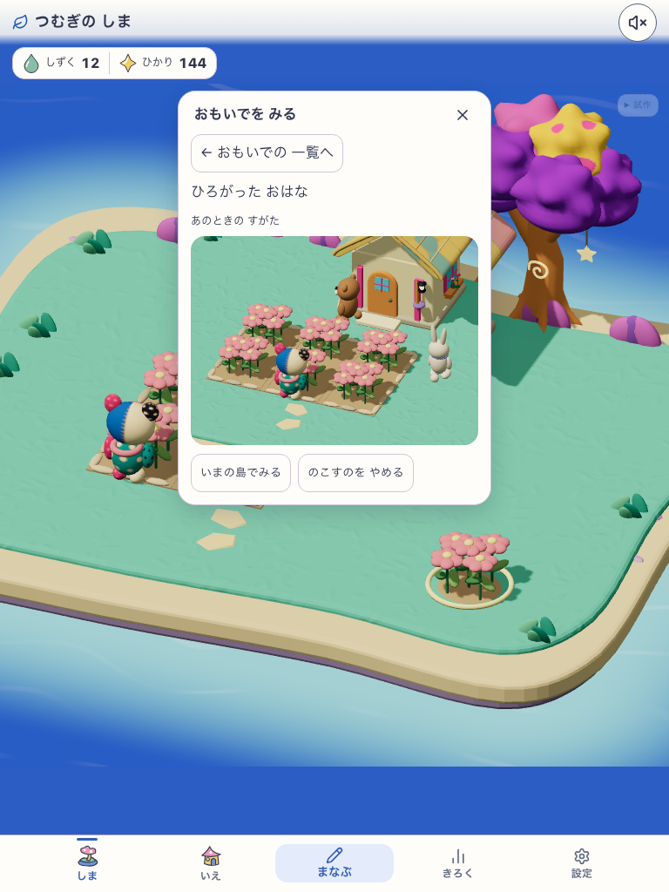
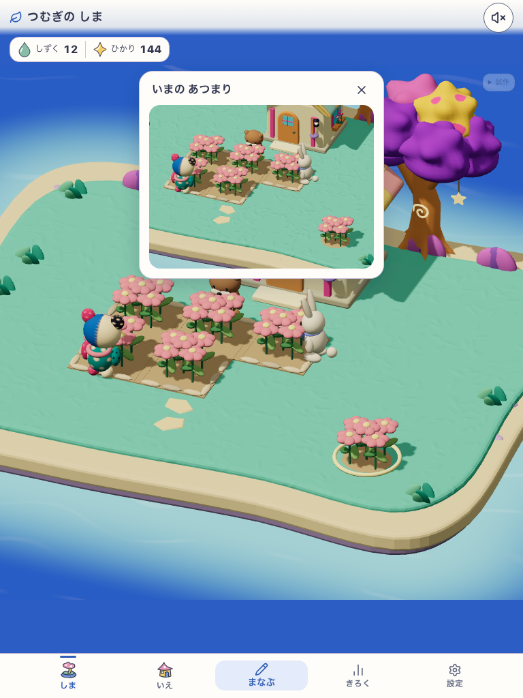
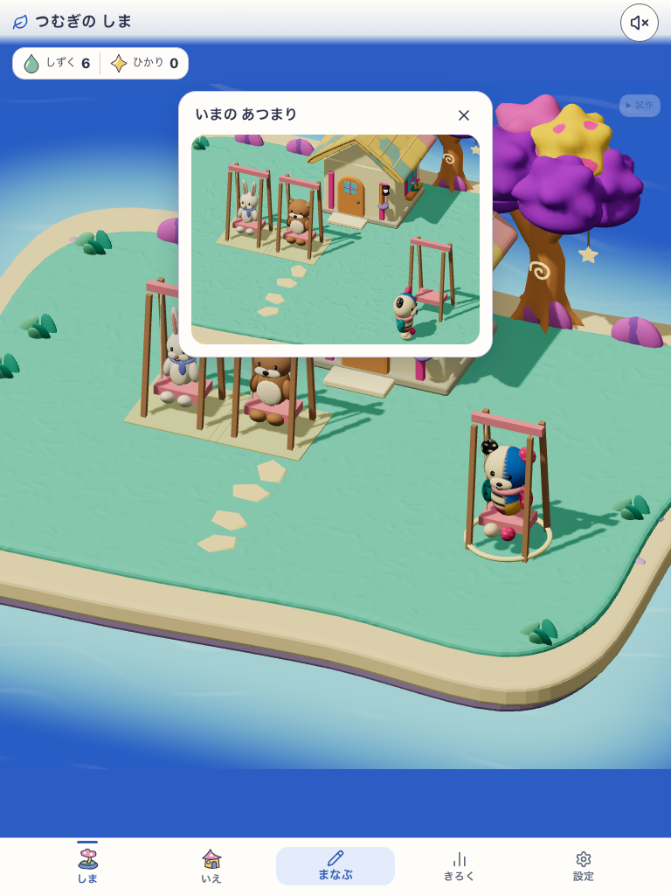